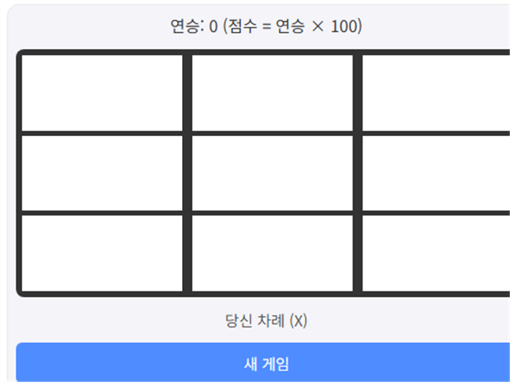

틱택토 vs AI는 3x3 보드에서 AI를 상대로 가로·세로·대각선 중 한 줄을 먼저 채우면 승리하는 클래식 전략 게임입니다. 단순해 보이지만 첫 수의 위치가 승패를 크게 좌우합니다.
기본 규칙
- 빈 칸을 클릭해 표시를 놓습니다. 사람이 먼저, AI가 이어서 둡니다.
- 가로·세로·대각선 어느 한 줄을 먼저 채우면 승리합니다.
- 9칸이 모두 채워지도록 승부가 나지 않으면 무승부입니다.
AI를 이기는 전략
1. 중앙 칸을 먼저 차지하세요
중앙 칸은 가로·세로·대각선 4개 줄에 모두 포함되는 유일한 칸입니다. 첫 수로 중앙을 차지하면 이후 다양한 승리 조합을 만들 수 있어 유리합니다.
2. 동시에 두 줄을 위협하는 자리를 노리세요
한 수로 두 개의 승리 줄을 동시에 완성 직전까지 만들 수 있다면, AI는 둘 중 하나만 막을 수 있으므로 다음 차례에 승리할 수 있습니다.
직접 플레이해보고 싶다면 여기서 바로 시작할 수 있습니다.